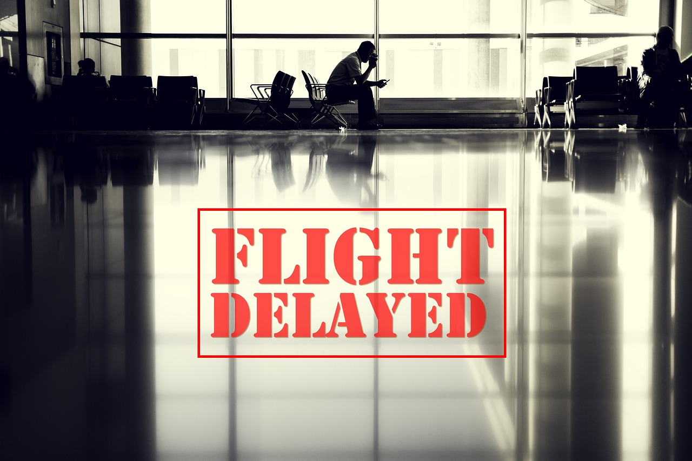

How can we help stranded travelers, unfamiliar with flying, make the best decision after an unexpected flight disruption? Without guidance, a sudden delay or cancellation turns into confusion, stress, and wasted time at the airport.

FunTheDelay gives you a clear, personalized plan the moment your flight is disrupted. Tell us your flight and what you need, and our AI builds the next step for you, from refunds and rebooking to nearby hotels and transport. Instead of wondering what to do, you get a ready-made plan that covers everything. We connect airlines, hotels, restaurants, transportation, and local attractions in one seamless itinerary. Your unexpected stop becomes an extra, fun trip, not a wasted day.
Enter your flight number or route so we know exactly where you are and where you need to go.
Select the cause of the delay and what you need: a refund, rebooking, a place to stay overnight, or something else.
Our AI generates your next steps: which flight to take, your refund options, hotels near you, transport, and local fun.
FunTheDelay is designed for inexperienced and international travelers who find themselves stranded at an airport after a flight delay or cancellation. If you are unfamiliar with the airline rules, the city, or the local language, we become your personal guide in the palm of your hand.
Airline, hotel, taxi, restaurant, and attraction, connected into a single efficient emergency plan just for you.
A real network of airlines, hotels, restaurants, transport, and local spots, not just a list of options.
Clear, step-by-step advice on refunds, rebooking, and overnight stays so you always know what to do next.
Turn a stressful layover into a remembered stop, complete with local attractions and a great place to rest.
Be the first to know when FunTheDelay takes off. Sign up for early access and updates.